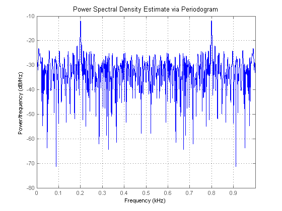
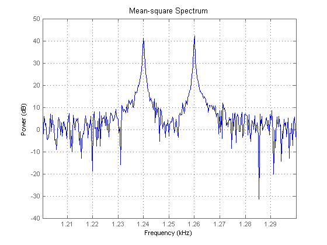
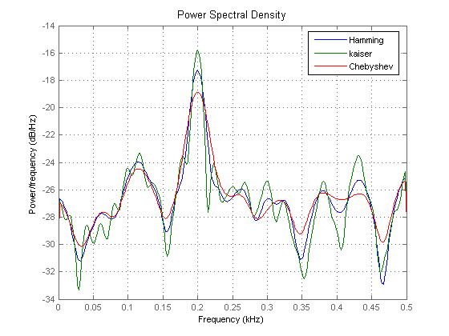

The Signal Processing Toolbox provides several command line functions to perform spectral analysis, including classical (non-parametric) techniques, parametric techniques, and eigenvector (or subspace) techniques. In addition, objects have been added which enhance the usability, and add plotting capabilities to these functions. There are nine classes representing the following spectral analysis algorithms.
Periodogram
Welch
MTM (Thomson multitaper method)
Burg
Covariance
Modified Covariance
Yule-Walker
MUSIC (Multiple Signal Classification)
EigenvectorThis demo describes the syntax to instantiate and use these objects, and demonstrates the use of their methods via examples.
You can instantiate an object without specifying any input arguments to the constructor. For example, the following creates a Periodogram spectrum object with default values for window and mode of specifying the FFT length.
h = spectrum.periodogram
h =
EstimationMethod: 'Periodogram'
FFTLength: 'NextPow2'
WindowName: 'Rectangular'
Specifying parameter values at object construction time requires that you specify the parameters in the order listed in the help
help spectrum/burg
BURG Burg spectral estimation.
H = SPECTRUM.BURG instantiates a Burg spectrum object.
H = SPECTRUM.BURG(ORDER) sets the order property to ORDER.
H = SPECTRUM.BURG(ORDER,FFTLENGTH) sets the mode of specifying the
number of FFT points to the string FFTLENGTH.
FFTLENGTH can be one of the following strings:
'InputLength' - use the length of the input signal.
'NextPow2' - use next power of two greater than the input signal
length (default).
'UserDefined' - use the NFFT specified.
EXAMPLE: Spectral analysis of a 4th order autoregressive (AR) process.
randn('state',1); x = randn(100,1);
y = filter(1,[1 1/2 1/3 1/4 1/5],x);
h = spectrum.burg(4); % Instantiate a burg object.
psd(h,y,'Fs',1000); % Plot the PSD.
See also SPECTRUM/PSD, SPECTRUM/COV, SPECTRUM/MCOV, SPECTRUM/YULEAR,
SPECTRUM/MTM, SPECTRUM/WELCH, SPECTRUM/PERIODOGRAM,
SPECTRUM/EIGENVECTOR, SPECTRUM/MUSIC.
In other words, when instantiating a Burg object you can't specify FFTLENGTH without specifying ORDER. However, as we'll see later in this demo you can always set any parameter after the object is created.
Here's an example of specifying several of the object's parameter values at construction time.
h = spectrum.welch('kaiser',66,50,'UserDefined')
h =
EstimationMethod: 'Welch'
FFTLength: 'UserDefined'
SegmentLength: 66
OverlapPercent: 50
WindowName: 'Kaiser'
Beta: 0.5000
You can set the value of any parameter, except for the EstimationMethod, using either dot-notation or the set method. Here's how you'd set the window of the Welch object created above using dot-notation.
h.WindowName = 'Chebyshev'
h =
EstimationMethod: 'Welch'
FFTLength: 'UserDefined'
SegmentLength: 66
OverlapPercent: 50
WindowName: 'Chebyshev'
SidelobeAtten: 100
Note that the Chebyshev window has a sidelobe attenuation parameter associated with it, which dynamically appears in the list of properties.
To specify a window parameter you must enclose the window name and parameter value in a cell array. Here's how you can specify the sidelobe attenuation value for the Chebyshev window:
h = spectrum.welch({'Chebyshev',80})
h =
EstimationMethod: 'Welch'
FFTLength: 'NextPow2'
SegmentLength: 64
OverlapPercent: 50
WindowName: 'Chebyshev'
SidelobeAtten: 80
Some of the most important methods of the spectrum objects are PSD, MSSPECTRUM, and PSEUDOSPECTRUM. The PSD method returns the Power Spectral Density. The MSSPECTRUM method returns the Mean-square (power) Spectrum calculated by the Periodogram or Welch spectral estimation technique. The PSEUDOSPECTRUM method returns the pseudospectrum calculated by the MUSIC or EIGENVECTOR estimation technique. All of these methods will plot the spectrum if no output argument is specified.
The Power Spectral Density is a measure of power per unit of frequency, hence it has units of power/frequency. For example, for a sequence of voltage measurements the units of the PSD are volts^2/Hz. The Mean-square Spectrum, on the other hand, is a measure of power at specific frequency and has units of power. Continuing our example where the signal is voltage measurements the units would be volts^2.
All three of these methods have the same syntax. They require a spectrum object as the first input and the signal to measure the power as the second input argument. Then you can optionally specify property-value pairs for the sampling frequency, the spectrum type, and the number of FFT points. The three properties are the following:
Fs
SpectrumType
NFFTAlternatively you can invoke the psdopts method on a spectrum object which returns an options object with default values for these and other properties.
h = spectrum.welch;
hopts = psdopts(h)
hopts =
NFFT: 8192
NormalizedFrequency: true
Fs: 'Normalized'
SpectrumType: 'Onesided'
CenterDC: false
You can then set the values of any of the properties of the options object hopts and pass it to the PSD method. There are corresponding MSSPECTRUMOPTS and PSEUDOSPECTRUMOPTS methods that return options objects to be used with the MSSPECTRUM and PSEUDOSPECTRUM methods, respectively.
In this example we'll compute and plot the power spectral density of a cosine of 200 Hz with noise, using a Periodogram spectrum object.
% Create signal. Fs = 1000; t = 0:1/Fs:.3; rand('state',0); x = cos(2*pi*t*200)+randn(size(t)); % A cosine of 200Hz plus noise % Instantiate spectrum object and call its PSD method. h = spectrum.periodogram('rectangular','UserDefined'); hopts = psdopts(h,x); % Default options set(hopts,'Fs',Fs,'SpectrumType','twosided'); psd(h,x,hopts)
Because Fs was specified the PSD was plotted against the frequency in units of Hz. If Fs was not specified a frequency with units of rad/sample would have been used (in that case the PSD units would be power/(rad/sample).) Also, specifying the SpectrumType as 'twosided' indicates that we want the spectrum calculated over the whole Nyquist interval.
The PSD plot includes context sensitive menus (that can be accessed via right-click) for the xlabel, the ylabel, and the axis. The xlabel context menu enables you to choose between normalized and non-normalized frequency units. The ylabel context menu allows you to choose between linear and dB units for the power. The axis context menu launches the same dialog as the Analysis Parameter menu item under the Edit menu. The dialog allows you select and set various parameters; including the parameters discussed above, as well as the frequency range, and scale.
If we specify an output argument then the PSD method will return a PSD object.
%Use a long FFT for integral approximation accuracy set(hopts,'NFFT',2^14); hpsd = psd(h,x,hopts)
hpsd =
Name: 'Power Spectral Density'
Data: [16384x1 double]
SpectrumType: 'Twosided'
Frequencies: [16384x1 double]
NormalizedFrequency: false
Fs: 1000
The PSD object returned contains among other parameters the spectrum data, the frequencies at which the spectrum was calculated, and the sampling frequency. The methods of the PSD object include plot, and avgpower. The plot method plots the spectrum data stored in the object. The avgpower method uses a rectangle approximation to the integral to calculate the signal's average power using the PSD data stored in the object.
The avgpower method returns the average power of the signal which is the area under the PSD curve.
avgpower(hpsd)
ans =
1.3367
In the example above we specified 'twosided' in the call to the psd method via the options object hopts. However, for real signals by default the 'onesided' PSD is returned. Likewise, if no output argument is specified the plot displays only half the Nyquist interval (the other half is duplicate information).
psd(h,x,hopts)
set(gcf, 'Color', [1 1 1])
It's important to note that although we're only seeing half the Nyquist interval it contains the total power, i.e., if you integrate under the PSD curve you get the total average power - this is called the one-sided PSD. Continuing the last example let's measure the average power which should be the same as when we used the 'twosided' PSD above.
hpsd = psd(h,x,hopts);
avgpower(hpsd)
ans =
1.3367
You can also instantiate PSD, MSSPECTRUM, and PSEUDOSPECTRUM data objects directly. These objects can be used to contain your existing spectrum data and enable you to use the plotting features. These objects also accept the data in a matrix format where each column is different spectral estimate.
In this example we use the Goertzel algorithm to resolve the 1.24 kHz and 1.26 kHz components in a cosine which also has a 10 kHz component. We then use the MSSPECTRUM object to store the data and plot it.
% Generate signal. randn('state',0); Fs = 32e3; t = 0:1/Fs:2.96; x = cos(2*pi*t*10e3)+cos(2*pi*t*1.24e3)+cos(2*pi*t*1.26e3)... + randn(size(t)); % Use Goertzel to compute the spectrum. nfft = (length(x)+1)/2; f = (Fs/2)/nfft*(0:nfft-1); % Generate frequency vector indxs = find(f>1.2e3 & f<1.3e3); % Find frequencies of interest X = goertzel(x,indxs); % Create a Mean-square spectrum object with result from Goertzel. hms = dspdata.msspectrum((abs(X)/length(X)).^2,f(indxs),'Fs',Fs); plot(hms); % Plot mean-square spectrum. set(gcf, 'Color', [1 1 1])
In this example we estimate the power spectral density of a real signal using three different windows. We then create a PSD data object with these three spectrums stored as a matrix, and call its plot method to view the results graphically.
% Create signal. Fs = 1000; t = 0:1/Fs:.296; x = cos(2*pi*t*200)+randn(size(t)); % A cosine of 200Hz plus noise % Construct a Welch spectrum object. h = spectrum.welch('hamming',64); % Create three power spectral density estimates. hpsd1 = psd(h,x,'Fs',Fs); Pxx1 = hpsd1.Data; W = hpsd1.Frequencies; h.WindowName = 'Kaiser'; hpsd2 = psd(h,x,'Fs',Fs); Pxx2 = hpsd2.Data; h.WindowName = 'Chebyshev'; hpsd3 = psd(h,x,'Fs',Fs); Pxx3 = hpsd3.Data; % Instantiate a PSD object and store the three different estimates % in one object since they all share the same frequency information. hpsd = dspdata.psd([Pxx1, Pxx2, Pxx3],W,'Fs',Fs)
hpsd =
Name: 'Power Spectral Density'
Data: [257x3 double]
SpectrumType: 'Onesided'
Frequencies: [257x1 double]
NormalizedFrequency: false
Fs: 1000
plot(hpsd);
set(gcf, 'Color', [1 1 1])
legend('Hamming','kaiser','Chebyshev');
